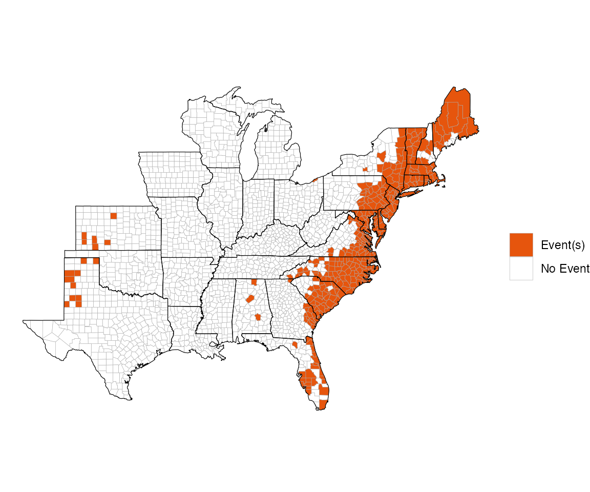

Overview of noaastormevents
Brooke Anderson, Ziyu Chen, and Jordan Robinson
2023-08-10
Source:vignettes/noaastormevents.Rmd
noaastormevents.RmdDescription of package
This package can be used to explore and map data from NOAA’s Storm Events Database. This storm event database is maintained by NOAA’s National Centers for Environmental Information and aims to provide information, including estimates of damage and human health impacts, for severe storm events that affect the U.S. It has aggregated storm event listings for tornados since the 1950s and for a broad range of event types (e.g., snow storms, heat waves, droughts, wildfires, floods) since 1996. This database has been used either alone or in conjunction with other data for a number of scientific studies. It is available for downloading at https://www.ncdc.noaa.gov/stormevents/ftp.jsp, with three files (one with event details, one with fatality details, and with with location details) available per year.
While the online database does not have a structured API, this package uses regular expressions to search the listings of available files to identify the filename for a queried year and download that year’s data to a user’s R session. The package functions then filter the downloaded storm event listings based on the dates, locations, event types, and other search limitations specified by the user. In particular, this package can be used to identify storm event listings that were close in location and time to Atlantic basin tropical storm tracks.
The package has two main functions:
-
find_events: Create a dataframe with event listings by county based on user-specified parameters (e.g., date range, specific tropical storm, type of event) from the NOAA Storm Events database -
map_events: Create a map showing the geographic distribution by county of certain features of an events dataframe (e.g., whether or not a county had an event, number of events per county, total property damage in a county across event listings).
While this package aims to create and map events data by county, some events are listed in the original database by forecast zone rather than county. For these observations, the package functions attempts to match the observation with the appropriate county. However, there are some events listed by forecast zone that cannot be matched to county, and so are excluded from results returned by this package. Further, there may be occasional errors in this matching, so we include a marker in returned datasets indicating which events were listed by forecast zone rather than county, to allow further quality control checks by the user for their specific applications of the package.
The noaastormevents package includes options that allow
users to find events based on proximity to a tropical storm. To use this
functionality, the user must have the hurricaneexposuredata
package, available from a drat repository, installed locally. This
package can be installed by running:
library(drat)
addRepo("geanders")
install.packages("hurricaneexposuredata")It is important for users to note that there are limitations to this
storm events database. In particular, listings can be somewhat
subjective. A lack of event listing in the database should not be
considered definitive proof that storm conditions did not exist at a
location at a certain time. Further, the database has changed over time
in terms of which types of events are included. R users should review
the Storm Event Database’s documentation, which is available at the database’s
website, to be sure they understand how to use and interpret event
listings from the database. Further, the noaastormevents
package includes a “Details” vignette with more details on this storm
events data and how it is processed by functions in this package.
Creating storm events datasets
The package has two main functions. First, the
find_events function can be used to create a dataframe with
all storm event listings within a specified time frame. For example, the
following code creates a dataframe with all events from the NOAA Storm
Events Database listed as beginning between September 14 and 18, 1999 (a
time window relevant for Hurricane Floyd, which caused extensive damage,
especially from flooding):
sept_1999_events <- find_events(date_range = c("1999-09-14", "1999-09-18"))
head(sept_1999_events)## # A tibble: 6 × 14
## begin_date end_date state cz_type cz_name event_type source injuries_direct
## <date> <date> <chr> <chr> <chr> <chr> <chr> <int>
## 1 1999-09-14 1999-09-14 Flori… C Duval Thunderst… TRAIN… 0
## 2 1999-09-14 1999-09-14 Flori… C St. Jo… Thunderst… TRAIN… 0
## 3 1999-09-14 1999-09-14 Arizo… C Marico… Hail OFFIC… 0
## 4 1999-09-14 1999-09-14 Arizo… C Marico… Hail TRAIN… 0
## 5 1999-09-14 1999-09-14 Arizo… C Pinal Thunderst… NEWSP… 0
## 6 1999-09-14 1999-09-14 Arizo… C Marico… Lightning EMERG… 1
## # ℹ 6 more variables: injuries_indirect <int>, deaths_direct <int>,
## # deaths_indirect <int>, damage_property <dbl>, damage_crops <dbl>,
## # fips <dbl>The code call returns a data frame with a subset of data from the Storm Events Database for 1999. Each event listing with a start date between September 14 and 18 is included. The data frame has the following columns:
-
begin_date: The date the event began -
end_date: The date the event ended -
state: The state in which the event occurred -
cz_type: Whether the event was listed by county or by forecast zone (Where possible, events that are listed by forecast zone are linked to the appropriate county FIPS code and therefore not excluded from this returned dataframe. However, this column is included to allow users to perform quality control on events listed by forecast zone (CZ_TYPEof “Z”).) -
cz_name: The name of the county (or other area name) in which the event occurred. -
event_type: Event type (e.g., “Flood”, “Lightning”, “Tornado”, “Wildfire”). See the NOAA Storm Events documentation for definitions of these event types -
source: The source of the storm event listing (e.g., trained spotter, emergency manager, general public, law enforcement) -
injuries_direct,injuries_indirect,deaths_direct,deaths_indirect,damage_property,damage_crops: Estimates of damage from the event to human health, property, and crops. For damages, initial values in the database (e.g.,"5K") have been converted where possible to numeric values (e.g.,5000). See the “Details” vignette for more details on this process. -
fips: Five-digit county (Federal Information Processing Standard) FIPS code. This code uniquely identifies each U.S. county. If the event was reported by forecast zone (cz_typeofZ), code within the package has used regular expressions to try to correctly match the area name to a county FIPS (see the “Details” vignette for more details on this process).
There are several ways that you can customize the use of the
find_events function. For more details, see the article on
“Finding
Events”.
Mapping storm events
The package also has a function, map_events, for mapping
several different features from the storm event dataframes returned by
find_events. This function is meant to provide reasonable
defaults for many maps a user might want to create with this data, but
in some cases might not provide the exact map a user would like to
create. In that case, we recommend the user try the
choroplethr package, which can be used to map US county
data as long as the data includes county FIPS codes, as the dataframes
returned by find_events do.
The map_events function allows you to create maps of
several features of the dataframe returned by
find_events:
- “any events”: Map whether or not a county had any listed events
- “number of events”: Map the number of events listed for a county
- “direct deaths”: Map the total count of direct deaths across all events listed for a county
- “direct injuries”: Map the total count of direct injuries across all events listed for a county
- “indirect deaths”: Map the total count of direct deaths across all events listed for a county
- “indirect injuries”: Map the total count of direct injuries across all events listed for a county
- “property damage”: Map the total property damage across all events listed for a county
- “crop damage”: Map the total crop damage across all events listed for a county
The maps for property and crop damage use a logarithmic scale, while others use an untransformed scale. Listings for all events within a county in the input dataframe are summed to create county-level values to map. While the function allows mapping indirect injuries and deaths, in practice is seems these are rarely listed in recent Storm Events data, so these may not create informative maps.
The map_events function inputs a dataframe as created by
find_events. For example, to map which counties had events
listed that started between September 14 and 18, 2009, you can run:
event_data <- find_events(date_range = c("1999-09-14", "1999-09-18"))
map_events(event_data)
There are many ways you can customize the use of this function. For
more details on how to use the map_events function, see the
article on “Mapping
Events”.
Find out more
There are many more details describing how this package works, as well as details on the Storm Events data, in the “Details” article.